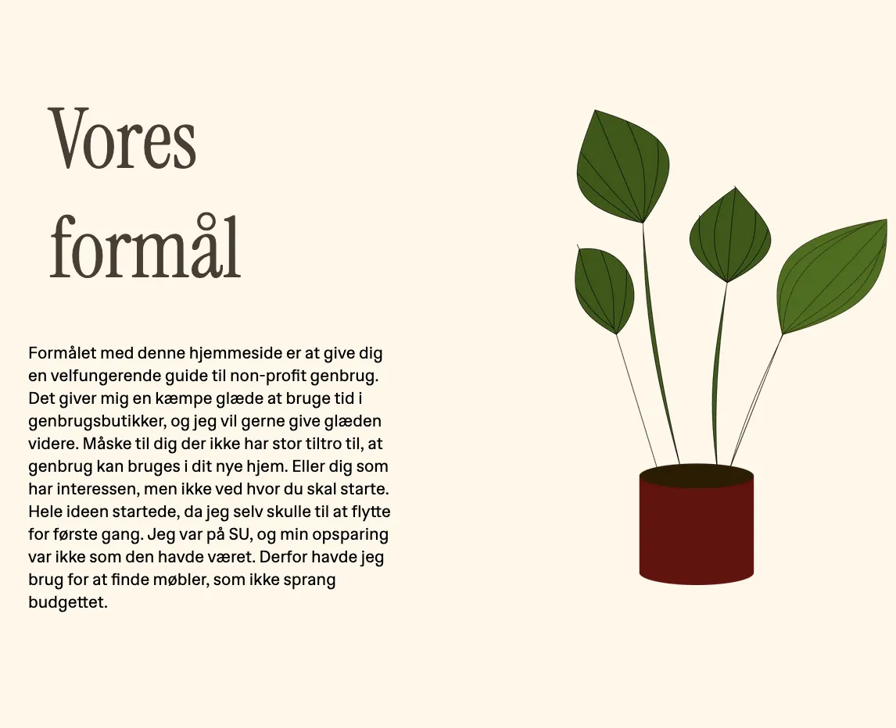
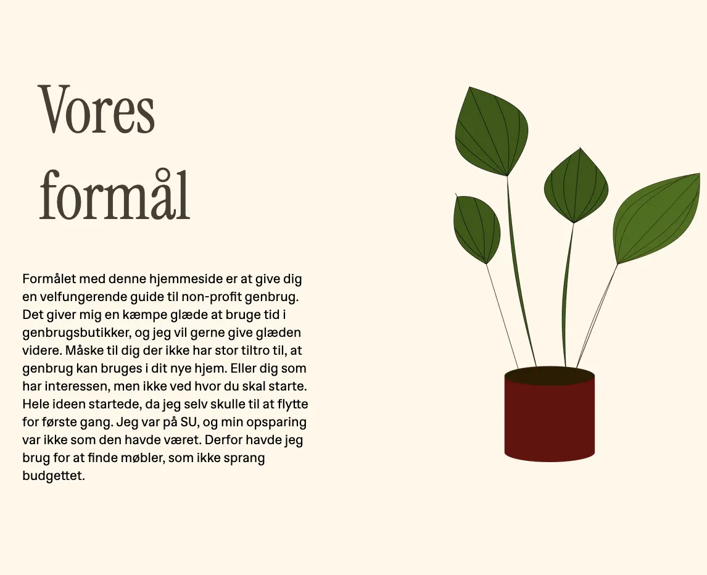

03

UX/UI
Temaet og dens process
Mit andet tema på multimedieuddannelsen fokuserede på grundlæggende UX/UI-design. Her blev jeg introduceret til vigtige designprincipper som Gestaltlovene og lærte at arbejde systematisk med processer som designbriefs, research, inspirationssøgning og grafisk analyse. Jeg prøvede kræfter med idéudvikling, moodboards, wireframing, styletiles, prototyper og testing. I projektet udviklede jeg et website ved hjælp af HTML, CSS og en smule JavaScript, hvor jeg blandt andet implementerede en burgermenu. Ved hjælp af tests som tænke-højt-test, 5-sekunders-test og Lighthouse-test kunne jeg løbende forbedre sitet og dokumentere indsigterne. Jeg er meget stolt af resultatet, og denne proces gav mig virkelig blod på tanden til at fortsætte min rejse på uddannelsen.
Vigtigste læringsprocesser
- Dybere forståelse indenfor kodning, og at lave responsive løsninger.
- Lo-fi og hi-fi prototyper i Figma.
- Vigtigheden af wireframes, styletiles og layoutdiagrammer.
- Filformater og forståelse for et mere bæredygtigt site.
- At have fokus på brugeren af sitet, og bruge tests til at forbedre oplevelsen.
- Implementering af burgermenu i JavaScript
 
